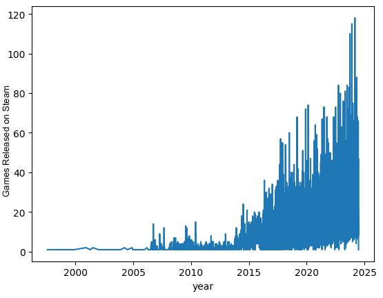
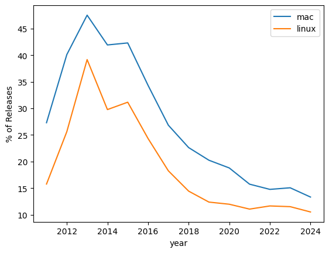
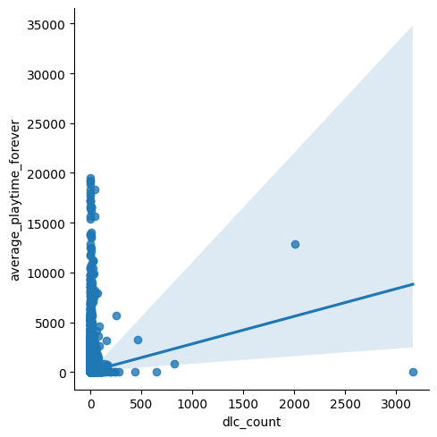

Analyzing 83,000 Steam Games
An analysis of the Steam games dataset from May 2024, covering 83,646 titles.
Background
Steam is the largest PC gaming platform. This dataset captures every game listed as of May 2024, including release dates, platform support, DLC counts, and average playtime.
Question 1: How has the number of releases changed over time?
Releases grew 56x between 2010 and 2023, from 254 to 14,224 games per year.

Question 2: How has platform support changed over time?
Mac and Linux support have been declining over time, with Mac games peaking at almost 50 percent in 2013 and falling to less than 15 percent by 2024.

Question 3: Do DLCs affect how long people play?
Games with more DLCs gain significantly more average playtime.

Takeaways
The Steam library has grown tremendously within the last decade; yet, the expansion has largely happened in Windows only. Support for Mac and Linux reached its peak a while ago, in around 2013, and gradually declined due to the overwhelming influx of releases being Windows-focused only. Finally, there seems to be a strong relationship between DLCs and player involvement since the latter tends to correlate positively with increased playthrough time.